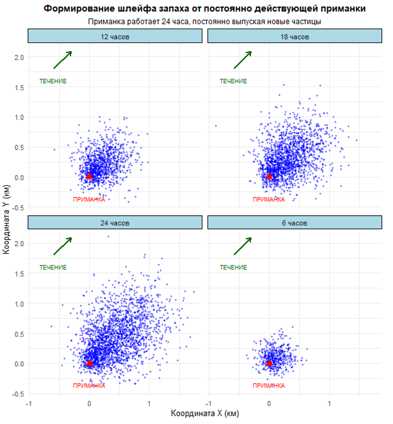
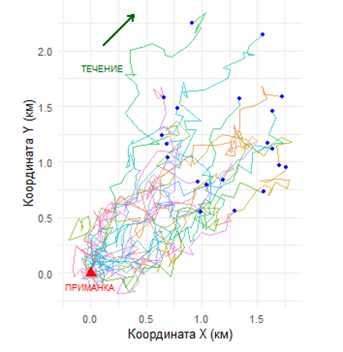
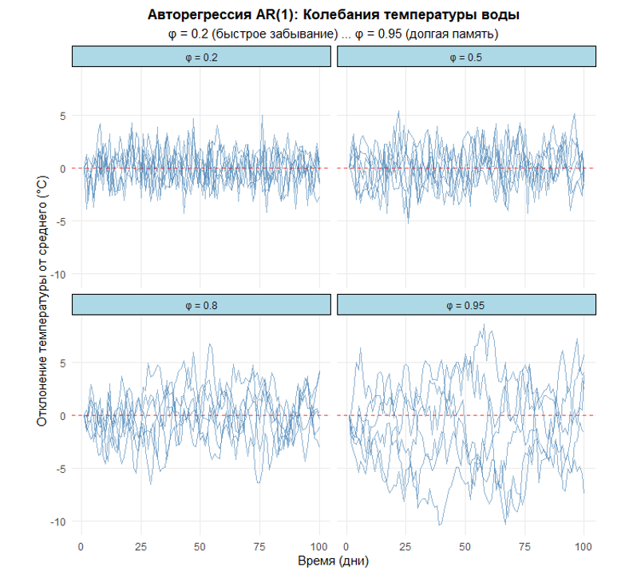

33 Случайное блуждание RW и автокорреляция AR(1)
33.1 Введение
Водные экосистемы по своей природе стохастичны — их динамика рождается на стыке закономерностей и случайности. Исторический опыт рыбохозяйственной науки показывает: чисто детерминистические модели часто неспособны адекватно предсказывать состояние водных биоресурсов, поскольку не учитывают фундаментальную неопределенность, в которой существуют реальные популяции.
Случайное блуждание (random walk) и авторегрессия первого порядка (AR(1)) — два принципиальных подхода к моделированию такой стохастической динамики. Практическая ценность их различий особенно очевидна в задачах управления промыслом: ошибочная идентификация типа процесса может вести либо к недолову (неэффективное использование), либо к перелову (угроза запасу).
Визуальное сравнение траекторий обоих процессов раскрывает их суть. Десять реализаций случайного блуждания похожи на веер расходящихся путей — это процесс без «памяти», не возвращающийся к исходному состоянию. В гидробиологии так могут вести себя кумулятивные изменения, например, в генетической структуре изолированной популяции.
Напротив, траектории AR(1) с φ = 0.8 колеблются вокруг среднего, демонстрируя «упругость» — система стремится вернуться к равновесию после отклонения. Параметр φ здесь — мера памяти системы. Такое поведение характерно для многих природных процессов: суточные колебания температуры у организмов, сезонная динамика зоопланктона.
Скрипт рисунка

33.2 Случайное блуждание
Случайное блуждание - одна из самых фундаментальных и в то же время элегантных математических концепций, которая пронизывает практически все разделы современной гидробиологии. Эта идея, родившаяся из простых наблюдений за движением частиц в воде, превратилась в мощный инструмент для описания и понимания сложнейших биологических процессов в водных экосистемах.
История случайного блуждания начинается с капли воды. В 1827 году Роберт Броун, тщательный и внимательный ботаник, разглядывал в микроскоп взвесь пыльцы в воде и заметил нечто удивительное - частицы совершали беспорядочные, хаотические движения, которые невозможно было объяснить ни течениями, ни конвекцией. Это наблюдение, сделанное в скромной лаборатории над обычной каплей воды, положило начало целому направлению в науке. Броун был настолько озадачен этим явлением, что проверил его на неорганических материалах - частичках горных пород, и убедился, что движение продолжается. Он так и не смог объяснить природу этого феномена, но его тщательные записи и описания стали отправной точкой для будущих поколений ученых.
Потребовалось почти восемьдесят лет, чтобы гениальный ум Альберта Эйнштейна в 1905 году дал объяснение этому явлению. В своей работе о броуновском движении Эйнштейн показал, что хаотическое движение частиц вызывается постоянными столкновениями с невидимыми молекулами воды. Это было не просто объяснение конкретного явления - это было подтверждение атомно-молекулярной теории вещества. Таким образом, простое наблюдение за поведением частиц в воде привело к одному из фундаментальных открытий в физике.
Математически случайное блуждание записывается как:
xₜ = xₜ₋₁ + εₜ, где εₜ ∼ N(0,σ²) - случайная компонента (белый шум).
Но что все это имеет общего с гидробиологией? Оказывается, самое прямое. Представьте себе зоопланктон в толще воды - его движение, особенно в отсутствие сильных течений, во многом напоминает то самое броуновское движение. Личинки рыб, дрейфующие в океанических водах, также подчиняются законам случайного блуждания, хотя и с добавлением некоторых направленных компонентов. Даже распространение загрязняющих веществ в водоемах, миграции водных организмов, распределение питательных веществ - все эти процессы могут быть описаны с помощью моделей случайного блуждания.
В популяционной экологии случайное блуждание нашло свое применение при описании динамики численности организмов. Когда мы изучаем колебания численности популяции рыбы из года в год, мы видим не только детерминированные тренды, связанные с воспроизводством и смертностью, но и случайные компоненты, обусловленные непредсказуемыми изменениями окружающей среды - температурными аномалиями, изменениями кормовой базы, эпидемиями. Именно эти случайные компоненты часто оказывают решающее влияние на судьбу популяции.
При оценке запасов водных биоресурсов мы постоянно сталкиваемся с необходимостью отделить реальные изменения в популяции от погрешностей наших методов наблюдения. Траловые съемки, акустические оценки, данные промысловой статистики - все они несут в себе элемент случайности, и понимание природы этой случайности позволяет нам делать более точные и надежные выводы. Интересно проследить, как математическая абстракция случайного блуждания постепенно проникала в биологию. В начале XX века английский статистик Карл Пирсон впервые ввел сам термин “случайное блуждание - random walk” и разработал его математический аппарат. Затем, в 1920-х годах, Рональд Фишер начал применять стохастические модели в генетике для описания дрейфа генов. Постепенно эти идеи проникли в экологию, и к 1950-м годам случайное блуждание стало стандартным инструментом для моделирования популяционной динамики.
Один из самых ярких примеров применения случайного блуждания в гидробиологии связан с работами Лотки и Вольтерры, которые, хотя и разрабатывали в основном детерминистические модели, заложили основы для последующего включения стохастических компонентов. Их последователи поняли, что без учета случайных факторов модели популяционной динамики часто оказываются слишком идеализированными и не соответствующими реальным данным.
В современной гидробиологии случайное блуждание используется в самых разных контекстах - от моделирования движения отдельных организмов до прогнозирования динамики целых экосистем. Когда мы изучаем распространение инвазивных видов в новых водоемах, когда моделируем последствия климатических изменений для распределения рыб, когда пытаемся предсказать вспышки численности вредоносного фитопланктона - везде мы используем аппарат случайного блуждания и связанных с ним стохастических процессов.
Важно понимать, что случайное блуждание - это не просто “учет случайности” как некоего недостатка наших знаний. Во многих случаях стохастичность является фундаментальным свойством биологических систем. Как отмечал известный эколог Роберт Мэй, “сложные экологические системы по своей природе содержат элемент непредсказуемости, и попытки описать их исключительно детерминистическими моделями часто приводят к ошибочным выводам”.
От абстрактной теории случайного блуждания перейдем к его практическому воплощению — моделированию распространения запаха приманки в воде (например в крабовой ловушке). Эта простая, но биологически обоснованная модель показывает, как математическая абстракция работает в реальных условиях промысла.
Мы имитируем работу ловушки, выпускающей частицы аттрактанта в течение 24 часов. Каждая частица начинает движение из точки приманки и далее следует уравнению случайного блуждания с дрейфом: к случайному смещению добавляется постоянная компонента течения. Именно эта комбинация — хаос микроскопических столкновений и упорядоченный поток воды — создает ту самую картину распространения запаха, которую детектируют хеморецепторы крабов и рыб.
• Первый график — эволюция шлейфа через 6, 12, 18 и 24 часа. Компактное облако частиц постепенно растягивается течением, формируя вытянутый шлейф с высокой концентрацией у источника и разреженный на периферии.
Скрипт рисунков

• Второй график — индивидуальные траектории 20 случайно выбранных частиц. Каждый путь уникален, но вместе они демонстрируют общую тенденцию: течение задает преимущественное направление, превращая хаос в упорядоченную структуру. вытянутый шлейф с высокой концентрацией у источника и разреженный на периферии.

Авторегрессия первого порядка AR(1)
Продолжаем наше путешествие по стохастическим ландшафтам гидробиологии — и если в прошлый раз мы шли по следам случайного блуждания, где каждое новое положение рождалось из предыдущего плюс чистый шум, то теперь обратимся к его более «дисциплинированному» родственнику — авторегрессии первого порядка, или AR(1). Эта модель, столь же простая по форме, но гораздо более сдержанная в поведении, играет ключевую роль в описании тех биологических процессов, где прошлое влияет на настоящее, но не диктует ему судьбу.
Представьте себе не частицу, дрейфующую в океане, а температуру на нерестилище. Она не уходит в бесконечность — несмотря на годовые флуктуации, она колеблется вокруг некой климатической нормальности. Если в этом году вода была аномально тёплой, велика вероятность, что и в следующем году она будет чуть теплее среднего — но не обязательно такой же горячей. И со временем система возвращается к своему среднему состоянию. Именно это поведение и описывает AR(1).
Математически AR(1) записывается так:
xt=ϕ⋅xt−1+εt, εt∼N(0,σ2),∣ϕ∣<1
Здесь коэффициент ϕ — «память» системы. Чем ближе он к 1, тем дольше сохраняется влияние прошлого; чем ближе к 0 — тем быстрее система «забывает» и возвращается к среднему. И главное отличие от случайного блуждания: при ∣ϕ∣<1 процесс стационарен — его статистические свойства (среднее, дисперсия, автокорреляция) не меняются со временем.
В отличие от RW, где траектория может уйти в бесконечность, AR(1) — это процесс с упругой памятью. Такое поведение типично для многих гидробиологических переменных:
Температура воды в конкретном районе: она флуктуирует, но не уходит в экстремумы без внешнего воздействия.
Пополнение гидробионтов, если оно зависит от средовых условий с короткой памятью (например, весенняя продуктивность).
Коэффициент уловистости (q), если его изменчивость вызвана краткосрочными факторами (опыт экипажа, состояние техники), но не систематическим трендом.
Остатки в моделях «запас–пополнение», когда необъяснённая часть динамики сохраняет корреляцию от года к году, но не накапливается.
AR(1) — это модель «умеренного консерватизма» природы: система реагирует на прошлое, но не позволяет ему доминировать.
Хотя идея авторегрессии зародилась в начале XX века в работах Юла и Слуцкого при анализе экономических временных рядов, её проникновение в экологию произошло позже — в 1960–1970-х годах, когда исследователи начали осознавать, что не всякая корреляция во времени — это тренд. Особенно важным стал вклад Роберта Мэя и Питера Тёрчина, которые показали, что даже в детерминистических моделях популяционной динамики (например, логистическом уравнении с запаздыванием) могут возникать стохастически-подобные колебания, которые лучше всего аппроксимируются AR(1)-процессами.
В гидробиологии AR(1) стал стандартом при моделировании коррелированного шума в индексах численности, ошибках наблюдений и скрытых состояниях в фильтрах Калмана. Например, в байесовских моделях оценки запасов (SPiCT, JABBA) AR(1) часто используется для описания временной структуры отклонений от детерминированной траектории — именно там, где RW был бы слишком «вольным», а белый шум — слишком «холодным».
Данный скрипт демонстрирует работу авторегрессионной модели первого порядка AR(1) на примере моделирования колебаний температуры воды в водных экосистемах. Он генерирует множественные траектории температурных отклонений от среднего значения для четырех различных уровней “памяти” системы (φ = 0.2, 0.5, 0.8, 0.95), визуализируя, как параметр φ влияет на скорость возврата системы к равновесному состоянию после случайных возмущений.
На выходе скрипт создает компактный график с четырьмя фасетками, где каждая панель показывает шесть реализаций AR(1) процесса для соответствующего значения φ. Это наглядно иллюстрирует фундаментальное свойство AR(1) процессов — способность колебаться вокруг среднего значения с разной степенью инерции, что соответствует различным типам водных экосистем: от быстро реагирующих мелководий до инерционных глубоководных бассейнов.
